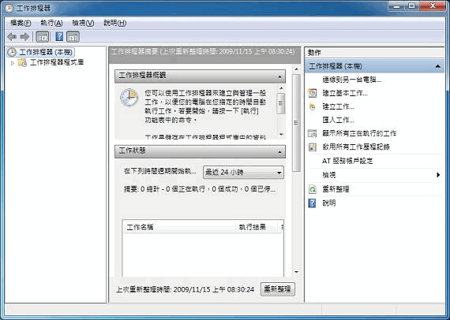
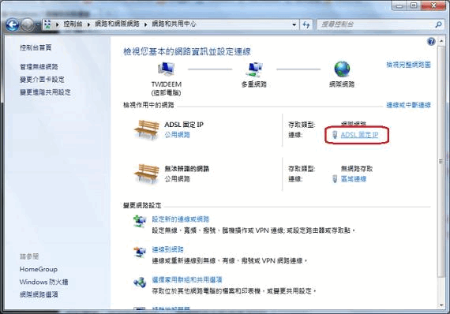
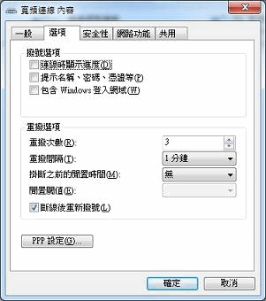

讓 Windows 7 開機時自動連線 ADSL
請先嘗試這些方便有效的做法
最好的做法，是參考微軟網站的《如何在 Windows 7 中設定開機後 ADSL 寬頻自動連線？》，將設定好的網路連線，建立一個「捷徑」，然後放到「開始 → 啟動」裡面：
http://support.microsoft.com/kb/977868/zh-tw/
或者下載「電癮院」設計的「自動撥號連線程式」：
http://changyang319.pixnet.net/blog/post/26752488
已過時做法
步驟一
依序操作「開始 → 控制台 → 系統及安全性 → 排程工作」，這時會出現「工作排程器」視窗。

步驟二
點擊「建立基本工作」。
步驟三
「名稱」隨便取，例如我取「自動連線到 ADSL」。
完成後按「下一步」。
步驟四
接著圈選「在您登入時執行」或「在電腦啟動時執行」，兩者皆可。
完成後按「下一步」。
步驟五
圈選「啟動程式」。
完成後按「下一步」。
步驟六
在「程式或指令碼」輸入「C:\Windows\System32\RasPhone.exe」。
在「新增引數」輸入「-d '你的 ADSL 撥號連線名稱'」。
完成後按「下一步」。
A. 注意「新增引數」的寫法是「負號 + d + 空白 + 雙引號 + 你的 ADSL 連線名稱 + 雙引號」！正常來講，在 Windows 7 建立網路連線時，如果只顧按下一步的話，這個名稱預設為「寬頻連線」；這時輸入的引數就是「-d '寬頻連線'」。
B. 如果你不知道自己的連線名稱是什麼，請先確認你已經連線 ADSL，然後點選「開始 → 控制台 → 網路和網際網路 → 檢視網路狀態及工作」，就可以在「檢視作用中的網路」裡面看到你的連線名稱。假如你發現你取的連線名稱是「趴趴熊的ADSL」，那麼輸入的引數寫法就是「-d '趴趴熊的ADSL'」。

步驟七
重新開機，設定無誤的話，一開機就會自動連線 ADSL。
補充
如果你開機時發現，雖然會自動連線 ADSL，卻看得到連線的進度視窗、甚至跳出視窗會要你輸入連線密碼，這時可將你的「ADSL 連線」設定為把「連線時顯示進度」和「提示名稱、密碼、憑證等」兩個項目取消，如圖：

這樣就可以無聲無息地在開機時自動連線。